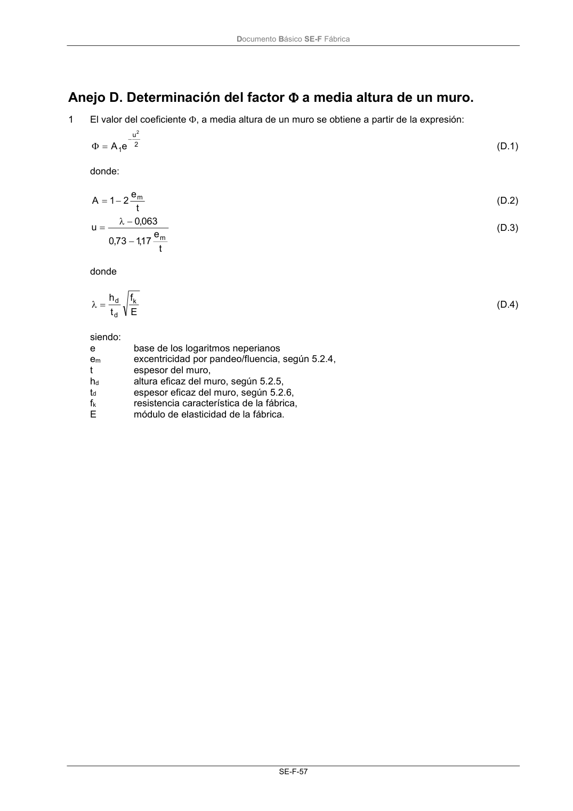

DB-SE-F · Anejo D. Determinación del factor a media altura de un muro. · versión 2019-12-20
SHA256: e3e0805c3b4c307519c26dc34c3fdbf143d842edd013c91b0f52d2c73403d91c · página física 61 de 70 · métodos de encabezado
solo si están cotejados.
Formatos: Markdown · JSON de bloques · PDF p. 61 · imagen PNG
Documento Básico SE-F Fábrica SE-F-57 Anejo D. Determinación del factor a media altura de un muro. 1 El valor del coeficiente , a media altura de un muro se obtiene a partir de la expresión: 2 u 1 2 e A (D.1) donde: t e 2 1 A m (D.2) t e 17 ,1 73 ,0 063 ,0 u m (D.3) donde E f t h k d d (D.4) siendo: e base de los logaritmos neperianos em excentricidad por pandeo/fluencia, según 5.2.4, t espesor del muro, hd altura eficaz del muro, según 5.2.5, td espesor eficaz del muro, según 5.2.6, fk resistencia característica de la fábrica, E módulo de elasticidad de la fábrica.
